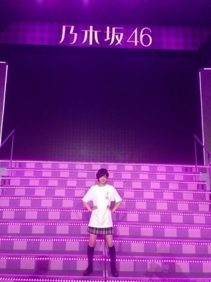

生駒ちゃんですっ！
10月6日乃木坂46は代々木のステージに立ちました！
来てくださった皆さん本当に本当にありがとうございましたヽ(・∀・)ﾉ
乃木坂46にあの景色を見せてくれてありがとうございます。
駆け巡りました。
おかげ様で体が凄く痛い。
くしゃみしたらお腹が筋肉痛で痛い。
でもこんなに心地よい疲れはきっともう味わえないと思った。
初めてだからこそのこの思い。
大切に覚えておこう！
代々木の魔物はいろいろ教えてくれました。
楽しさ、嬉しさ、悔しさ、怖さ。
もっと成長したいと思った。
いっぱい駆け巡った！
楽しいって無意識にその感情が体を動かしていました。
メンバー、スタッフの皆さん。
大変な事沢山あったけどひとつの大きなステージを作ってくださってありがとう。
また良いものを作ろうね！
まずはいったんお疲れ様でした！
乃木坂ふぁむの皆様へ。
乃木坂46の姿はどうでしたか？
LIVE楽しんで頂けたでしょうか？
またステージを一緒に楽しみましょうねっ！

そして選抜発表がありましたねっ！
今回も八福神に選んで頂きました！
チャンスを頂きました。
無駄にしないように頑張ります。
そしてセンターは二期生の堀ちゃんになりました！
乃木坂も変わり続けないといけないからね。
堀ちゃんはこれから想像以上の様々な体験をしたり考えたりすると思います。
乗り越える事が出来るのは自分しかいない。
自分が自分を前に進めるんだっ！
って何偉そうに言ってるんだ生駒ちゃん！
すっすみませんっ！
だからもし辛い事があったら頼って下さい。
これでも二年間乃木坂やってきたのです！
皆さんはそれぞれ思う事あると思いますが、生駒ちゃんは元気ですっ！やる気満々！
まぁ次のシングルにはNARUTOの主題歌もある訳ですしっ！
上を目指すとかあると思うけど私はその運命を受け入れて進んで行こうと考えています。
その与えられた場所を生かすのは自分！
でも私は歌もダンスもアイドル力も良いとはいえない。
なぜそこにいるのと言われます。
でも。
私を応援して下さる人がいる。
何があっても応援してるよって言ってくれる人がいるから笑顔でいれるんです。
その言葉に何度も励まされています！
7枚目もよろしくお願いしますヽ(・∀・)ﾉ
12月20日に武道館LIVEが決まりました。
そして12月29日は生駒ちゃんの18歳のお誕生日ですヽ(・∀・)ﾉ
一足お先のお誕生日プレゼントみたいだなと思いました！
生駒里奈を見ていて下さい。
へばなっ！